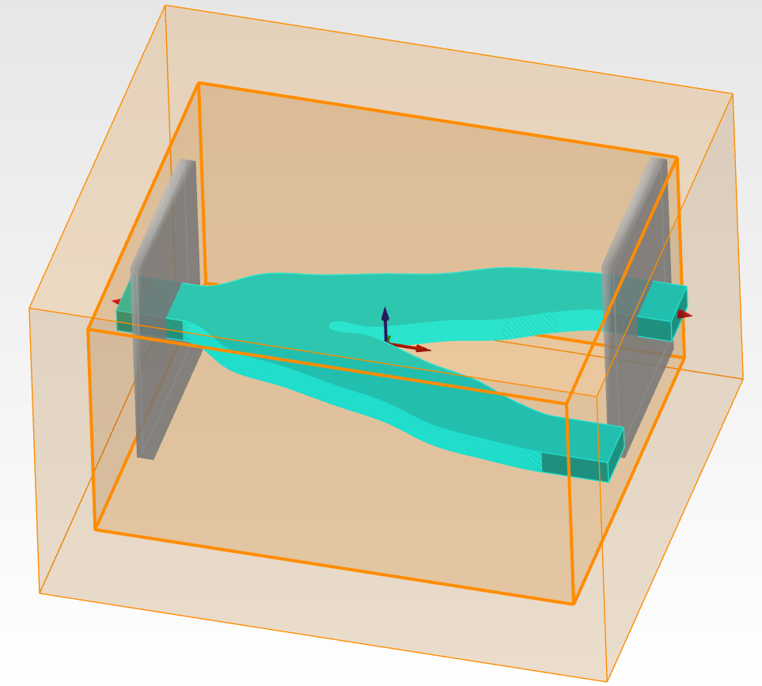
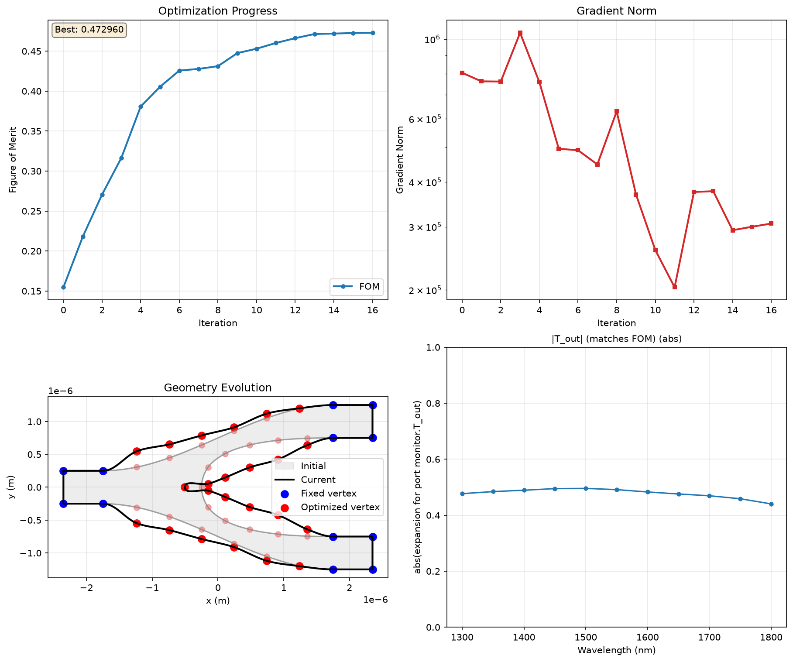
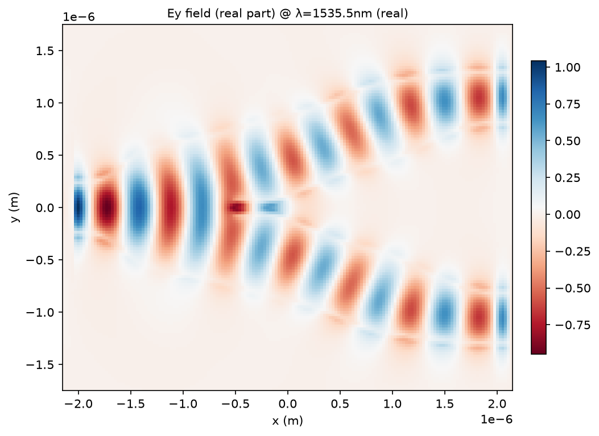
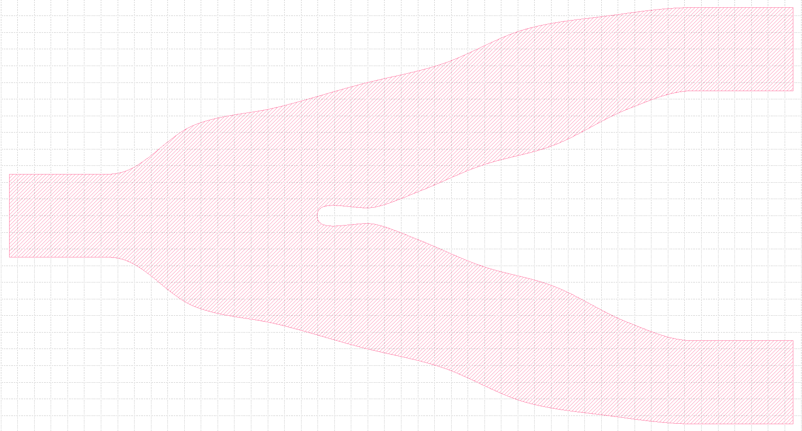

Inverse design of a Y-branch using lumopt2#
An example of a parametric optimization for a Y-branch using lumopt2. This example demonstrates the use of a closed curve parametrization with a custom function to enforce symmetry. After the optimization, the final design is exported as a GDSII file.
Prerequisites:
Valid Lumerical FDTD license with Lumerical 2026 R1.2 release or newer.

Imports#
[ ]:
1from pathlib import Path
2
3from matplotlib import pyplot as plt
4
5plt.ion()
6import numpy as np
7
8import ansys.lumerical.core as lumapi
9import ansys.lumerical.core.lumopt2 as lmpt
Material, simulation, geometry#
Material and waveguide parameters#
[ ]:
10n_wg = np.sqrt(12.25) # Silicon refractive index
11n_bg = np.sqrt(2.25) # Silicon oxide background
12wg_width = 0.5e-6 # Waveguide width (500 nm)
13wg_height = 0.22e-6 # Waveguide height (220 nm)
Wavelength#
Set wavelength from 1300-1800nm
[ ]:
14wavelengths = np.linspace(1300e-9, 1800e-9, 11)
Design region parameters#
[ ]:
15splitter_span_x = 3.5e-6 # Length of the Y-branch splitter
16wg_y_offset = 1.0e-6 # Output arm offset in y
17port_width = 3 * wg_width # Port width to capture the mode
18port_height = 2e-6 # Port height in z
19fdtd_span_x = splitter_span_x + 0.8e-6
20fdtd_span_y = 2 * wg_y_offset + 3 * wg_width
21fdtd_span_z = wg_height + 2e-6
22mesh_size = 25e-9
23offset = 4 * mesh_size # Buffer between optimization region and FDTD edge
Base simulation#
[ ]:
24def generate_base_sim(fdtd):
25 """Build the FDTD region, the input/output ports, and the field monitor."""
26 fdtd.addfdtd(
27 {
28 "x": 0,
29 "x span": fdtd_span_x,
30 "y": 0,
31 "y span": fdtd_span_y,
32 "z": 0,
33 "z span": fdtd_span_z,
34 "index": n_bg,
35 "mesh accuracy": 3,
36 "mesh refinement": "precise volume average",
37 }
38 )
39 fdtd.addport({"name": "port_in"})
40 fdtd.set("injection axis", "x")
41 fdtd.set(
42 {
43 "direction": "Forward",
44 "x": -fdtd_span_x / 2 + 2e-7,
45 "y": 0,
46 "y span": port_width,
47 "z span": port_height,
48 "frequency dependent profile": False,
49 }
50 )
51
52 fdtd.addport({"name": "port_out1"})
53 fdtd.set("injection axis", "x")
54 fdtd.set(
55 {
56 "direction": "Backward",
57 "x": fdtd_span_x / 2 - 2e-7,
58 "y": wg_y_offset,
59 "y span": port_width,
60 "z span": port_height,
61 "frequency dependent profile": False,
62 }
63 )
64
65 # 2D field monitor through the device midplane (used by GraphicalVisualizer).
66 # Override the global monitor settings so this monitor only records the
67 # mid-O-band wavelength: that's all we need for live visualization and it
68 # keeps the monitor lightweight regardless of the optimization sweep.
69 center_wavelength = float(wavelengths[len(wavelengths) // 2])
70 fdtd.adddftmonitor(
71 {
72 "name": "field_monitor",
73 "x": 0,
74 "x span": fdtd_span_x,
75 "y": 0,
76 "y span": fdtd_span_y,
77 "z": 0,
78 "override global monitor settings": True,
79 "use source limits": False,
80 "frequency points": 1,
81 "wavelength center": center_wavelength,
82 "wavelength span": 0,
83 }
84 )
85
86 fdtd.setglobalsource("wavelength start", wavelengths[0])
87 fdtd.setglobalsource("wavelength stop", wavelengths[-1])
88 fdtd.setglobalmonitor("frequency points", len(wavelengths))
89 fdtd.setglobalmonitor("use wavelength spacing", True)
90 fdtd.setnamed("FDTD::ports", "override global monitor settings", False)
Optimization region#
The optimization region is kept inside the FDTD bounds with a small buffer
[ ]:
91optimization_region = lmpt.Box(
92 x_min=-splitter_span_x / 2,
93 x_max=splitter_span_x / 2,
94 y_min=-(wg_y_offset + wg_width),
95 y_max=wg_y_offset + wg_width,
96 z_min=-wg_height / 2.0,
97 z_max=wg_height / 2.0,
98 mesh_size=mesh_size,
99)
Closed curve geometry#
Closed-curve definition of the silicon Y-splitter. Walking the boundary counter-clockwise from the top-left, the four cubic segments (2, 6, 7, 11) form the parametric splitter region; everything else is fixed waveguide wall. Segments 2 and 11 control the outer walls of the upper / lower output arms (mirror partners across y=0); segments 6 and 7 control the inner V-shape between the two output arms (also mirror partners).
[ ]:
100path = [
101 lmpt.Segment([-fdtd_span_x / 2 - 200e-9, wg_width / 2], "linear"), # Segment 1
102 lmpt.Segment([-splitter_span_x / 2, wg_width / 2], "cubic"), # Segment 2 (upper outer wall, parametric)
103 lmpt.Segment([splitter_span_x / 2, wg_y_offset + wg_width / 2], "linear"), # Segment 3
104 lmpt.Segment([fdtd_span_x / 2 + 200e-9, wg_y_offset + wg_width / 2], "linear"), # Segment 4
105 lmpt.Segment([fdtd_span_x / 2 + 200e-9, wg_y_offset - wg_width / 2], "linear"), # Segment 5
106 lmpt.Segment([splitter_span_x / 2, wg_y_offset - wg_width / 2], "cubic"), # Segment 6 (upper inner wall, parametric)
107 lmpt.Segment([-splitter_span_x / 2 + 1500e-9, 0], "cubic"), # Segment 7 (lower inner wall, parametric)
108 lmpt.Segment([splitter_span_x / 2, -(wg_y_offset - wg_width / 2)], "linear"), # Segment 8
109 lmpt.Segment([fdtd_span_x / 2 + 200e-9, -(wg_y_offset - wg_width / 2)], "linear"), # Segment 9
110 lmpt.Segment([fdtd_span_x / 2 + 200e-9, -(wg_y_offset + wg_width / 2)], "linear"), # Segment 10
111 lmpt.Segment([splitter_span_x / 2, -(wg_y_offset + wg_width / 2)], "cubic"), # Segment 11 (lower outer wall, parametric)
112 lmpt.Segment([-splitter_span_x / 2, -wg_width / 2], "linear"), # Segment 12
113 lmpt.Segment([-fdtd_span_x / 2 - 200e-9, -wg_width / 2], "linear"), # Segment 13 (closes loop)
114]
115
116y_branch_curve = lmpt.ClosedCurve(path, z_min=-wg_height / 2, z_max=wg_height / 2, index=n_wg, optimization_region=optimization_region)
Check the geometry of the curve. The code will continue to run after this if the whole script is ran.
[ ]:
117y_branch_curve.plot()
118plt.pause(0.1)
Parametrization#
Parametrize the y-branch geometry and enforce mirror symmetry across y=0.
Number of control vertices added on each parametric segment. Increasing these values gives the optimizer more shape freedom at the cost of more adjoint gradient evaluations per iteration.
[ ]:
119num_params_outer = 6
120num_params_inner = 5
121num_params = num_params_outer + num_params_inner + 1 # +1 for the V-tip x-offset
Subdivide the four cubic boundary segments. The mirror partners (11 mirrors 2, 7 mirrors 6) get the same number of vertices so the parametrization function below can pair them one-to-one.
[ ]:
122split_result = y_branch_curve.split_segments(
123 [
124 lmpt.EqualSplit(segment_index=2, num_added_vertices=num_params_outer), # Upper outer wall
125 lmpt.EqualSplit(segment_index=6, num_added_vertices=num_params_inner), # Upper inner wall
126 lmpt.EqualSplit(segment_index=7, num_added_vertices=num_params_inner), # Lower inner wall (mirror of 6)
127 lmpt.EqualSplit(segment_index=11, num_added_vertices=num_params_outer), # Lower outer wall (mirror of 2)
128 ]
129)
130seg2_vertices = split_result[2]
131seg6_vertices = split_result[6]
132seg7_vertices = split_result[7]
133seg11_vertices = split_result[11]
134center_vertex_idx = seg7_vertices[0] - 1 # V-tip vertex sits between segments 6 and 7
Defining the symmetric parametrization#
[ ]:
135def symmetric_parametrization(params):
136 """Enforce symmetric vertex displacements by mapping ``params`` to per-vertex deltas.
137
138 Enforces symmetric displacements in vertices by mapping vertex displacements
139 to the same parameter values in the ``params`` array. Uses the params
140 array as well as the vertex indices from earlier.
141
142 Parameters
143 ----------
144 params : array-like
145 Length ``num_params`` array. Layout:
146
147 * ``params[0:num_params_outer]`` displace the outer-wall vertices
148 on segment 2 in +y; the mirror partners on segment 11 move in -y.
149 * ``params[num_params_outer:num_params_outer + num_params_inner]``
150 displace the inner-wall vertices on segment 6 in +y; the mirror
151 partners on segment 7 move in -y.
152 * ``params[-1]`` shifts the V-tip vertex in x.
153
154 Returns
155 -------
156 list of ParamVertex
157 Per-vertex displacement spec for every control vertex created by
158 ``split_segments`` above.
159 """
160 deltas = []
161
162 # Upper half
163 for i, idx in enumerate(seg2_vertices):
164 # Outer wall
165 deltas.append(lmpt.ParamVertex(idx=idx, delta_y=params[i]))
166 for i, idx in enumerate(seg6_vertices):
167 # Inner wall, starting at the end of the outer wall params
168 deltas.append(lmpt.ParamVertex(idx=idx, delta_y=params[num_params_outer + i]))
169
170 # V-tip vertex (x-only shift), this is the last parameter
171 deltas.append(lmpt.ParamVertex(idx=center_vertex_idx, delta_x=params[-1]))
172
173 # Lower half, traversed in reverse as we need the first vertex in segment 7 to pair with the last vertex in segment 6, etc.
174 # Symmetry enforced by making delta_y the negative of the same parameter
175 for i, idx in enumerate(seg11_vertices):
176 # Lower outer wall
177 mirror_i = num_params_outer - 1 - i
178 deltas.append(lmpt.ParamVertex(idx=idx, delta_y=-params[mirror_i]))
179 for i, idx in enumerate(seg7_vertices):
180 # Lower inner wall
181 mirror_i = num_params_inner - 1 - i
182 deltas.append(lmpt.ParamVertex(idx=idx, delta_y=-params[num_params_outer + mirror_i]))
183
184 return deltas
Bounds: the outer wall has more room to bow outward (positive y) than to bow inward (negative y). The inner wall and V-tip have asymmetric ranges tuned for the typical splitter optimization landscape.
[ ]:
185bounds = (
186 [(-250e-9, 500e-9)] * num_params_outer + [(-400e-9, 200e-9)] * num_params_inner + [(-400e-9, 100e-9)] # V-tip x-offset
187)
Call the parametrization function to apply the symmetric parametrization
[ ]:
188y_branch_curve.set_parametrization_function(
189 func=symmetric_parametrization,
190 n_params=num_params,
191 bounds=bounds,
192)
Check the geometry again after applying parametrization. The code will continue to run after this if the whole script is ran.
[ ]:
193y_branch_curve.plot()
194plt.pause(0.1)
Figure of merit#
Define a broadband figure of merit: the target transmission to port_out1 is 0.5 (50% of the input power per output arm), averaged over the O-band sweep above. PNorm broadcasts the scalar target across all wavelengths automatically.
[ ]:
195port_out = lmpt.PortResults("port_out1", metric="transmission", wavelengths=wavelengths)
196y_branch_fom = lmpt.Fom(port_out, fct=lmpt.PNorm(p=2, target=0.5))
Optimization session setup#
FDTD session#
Create an FDTD session with visible UI
[ ]:
197fdtd_session = lmpt.FdtdSession(show_fdtd_cad=True)
Project#
Create the project (FOM is defined in y_branch_setup.py)
[ ]:
198project = lmpt.Project(setup=generate_base_sim, parametrization=y_branch_curve, fom=y_branch_fom, fdtd_session=fdtd_session)
Uncomment and run the code below to validate that the parameter and project setup was done correctly
[ ]:
199# params = project.parametrization.get_initial_params()
200# lmpt.validate_gradient(project=project, params=params, perturbation=1e-9)
Optimizer#
Use SciPy’s L-BFGS-B (gradient-based, supports bounds). The project’s adjoint gradient turns each iteration into one forward + one adjoint sim, which is the same per-iteration cost as a gradient-free method but with much better convergence per iteration in the smooth-FOM regime.
[ ]:
201optimizer = lmpt.ScipyOptimizer(method="L-BFGS-B", max_iter=30)
Visualizer#
Visualizer 1: FOM trace, gradient-norm trace, current geometry, and the real part of the Ey field so we can watch the splitter mode reshape during optimization.
[ ]:
202visualizer = lmpt.GraphicalVisualizer(
203 figsize=(12, 10),
204 layout=(2, 2), # Arrange panels in 2x2 grid
205 panels=[
206 lmpt.FomPanel(),
207 lmpt.GradientNormPanel(),
208 lmpt.GeometryPanel(),
209 lmpt.MonitorPanel(
210 monitor_name="FDTD::ports::port_out1",
211 result_name="expansion for port monitor.T_out",
212 operation="abs",
213 title="|T_out| (matches FOM)",
214 # Clamp the transmission trace to the physical
215 # [0, 1] range so the plot stays comparable
216 # iteration-to-iteration even when the
217 # baseline transmission starts very low.
218 # ``axes_kwargs`` is forwarded verbatim to
219 # ``ax.set(**axes_kwargs)``.
220 axes_kwargs={"ylim": (0.0, 1.0)},
221 ),
222 ],
223)
Visualizer 2: Plot the y-direction electric field at the midplane monitor, for the midband wavelength.
[ ]:
224visualizer2 = lmpt.GraphicalVisualizer(
225 filename_prefix="field_plot_Ey",
226 panels=[
227 lmpt.MonitorPanel(monitor_name="field_monitor", result_name="E.Ey", operation="real", title="Ey field (real part)"),
228 ],
229)
Optimization session#
Put everything together into an optimization session
[ ]:
230optimization = lmpt.Optimization(
231 project=project,
232 optimizer=optimizer,
233 callbacks=[lmpt.FileLogger(), visualizer, visualizer2],
234)
Run optimization#
[ ]:
235result = optimization.run()
The final visualizer is shown below

The final electric field is shown below

Save project#
[ ]:
236best_params, best_fom = result
237project.save_project("y_branch_final.fsp", params=best_params)
Export as gds#
[ ]:
238project_dir = Path(project.fom.config_map.project_folder).resolve()
[ ]:
239with lumapi.FDTD(project=str(project_dir / "y_branch_final.fsp"), hide=True) as fdtd:
240 f = fdtd.gdsopen(str(project_dir / "y_branch_final.gds"))
241 fdtd.gdsbegincell(f, "y_branch")
242 # Material is set to the index as it was created as an "<Object defined dielectric>"
243 fdtd.gdsaddstencil(f, "1:1", {"material": "3.5", "partialname": "optimization_polygon", "z": 0})
244 fdtd.gdsendcell(f)
245 fdtd.gdsclose(f)
The exported GDSII file is shown below
